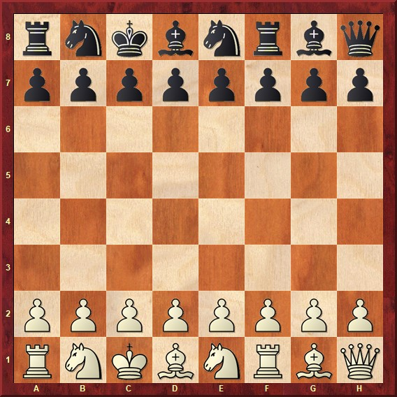
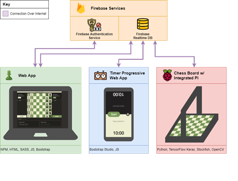
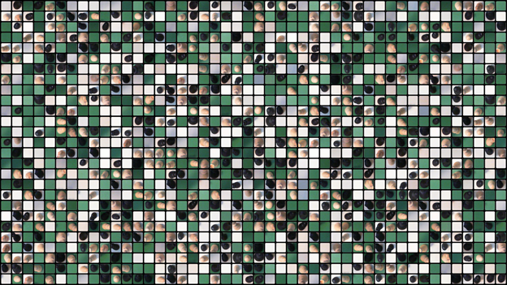

IoT Chess
The goal of this project was to create a system that would monitor a physical chess board, allowing user game data to be stored in a database as well as allowing users to request realtime hints when they are stuck on a move. Below is a diagram of the general flow of the ChessMate system.
ChessMate can be broken down into three main components - the physical chess board, the timer application and the web application. The phyiscal chess board comes equiped with a Raspberry Pi with a camera, when the system detects that a move has been made a signal will be sent to the Pi to capture a picture of the board and send out the move made. The Pi also has an attached 8X8 LED display that will display hints when the user requests, also if the user makes an illegal move the LED will warn the players. The image processing is done locally on the Raspberry Pi using Python and Keras, the data used to train our model can be seen in the image below.
The second component of the system is the main web app. The web app allows the user to log into an account that will sync with the physical board and allow users to track certain metrics of their chess games. The web app is also where a user would request a hint if needed, the user recieves three free hints a game and the hints will be displayed on the 8X8 LED matrix connected to the PI. The web app includes a virtual chess baord that will be updated in real time to reflect the state of the phsyical board.
The last component of the system is the timer app. The timer app is used to time the game and users will press the display after they have made a move. This is how the system detects that a move has been made and will signal to the PI that a new image capture is necessary. Below is a video demonstration of ChessMate in action.
While this is still a project in progress and their are many features I would still like to add, the conecpt of this project is something that I am very passionate about.